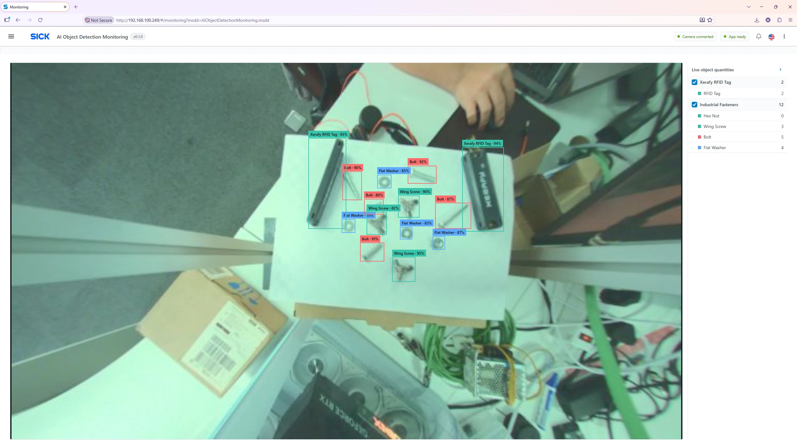
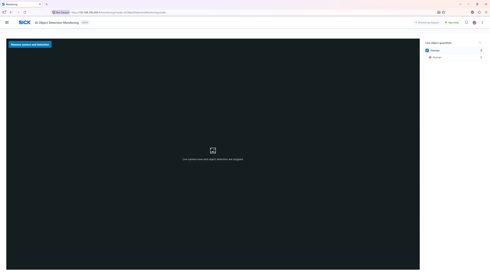

Monitoring Page
Primary operator view: see the current camera scene, detected object outlines and live counts. Open Monitoring from the application menu.

What you see
| UI element | Meaning / expected result |
|---|---|
| Camera image | Live browser preview of the Visionary B-Two color frame. A black or waiting area can mean monitoring is stopped, the camera is unavailable, or a frame is not yet ready. |
| Detection bounding box | Colored rectangle showing a recognized region; its label shows class name and confidence as a percentage. |
| Held box | Dashed/faded rectangle marked as held. The last known location is retained temporarily; it is not a fresh observation. |
| Live object quantities | Right-hand model and class totals. Expand/collapse the side panel with its arrow. |
| Checkboxes | Show/hide a model’s boxes or an individual class’s boxes. This changes only what the browser displays, not model execution or external outputs. |
| Camera connected / App ready | Header connection and readiness indicators. Both should normally be positive during operation. |
| Notification bell | Shows license, camera, inference and application log warnings when available. |
| Top-right ⋮ → Reload app | Restarts the application(s) to apply configuration or model changes; monitoring is temporarily interrupted. |
Normal monitoring procedure
- Open Monitoring and check that the header reads Camera connected and App ready.
- Check that the scene is correctly framed, illuminated and unobstructed.
- Present a known test object and look for the box label, confidence and matching increase in the live quantity.
- Use the model and class checkboxes to reduce on-screen clutter without interrupting detection.
- If the scene needs adjustment, ask an authorized engineer to update the appropriate camera/model parameters, then reload.
Stopping and resuming the camera
Select Stop camera and detection to stop camera acquisition and inference; the app saves the preference and automatically reloads. The display clears and the monitoring status changes to stopped. Select Resume camera and detection to save enabled state and automatically reload to resume operation. No extra confirmation is normally required for these two buttons.
Interpreting boxes and quantities
Confidence (for example 87%) is the model’s reported confidence for that particular detection, not a system-wide accuracy guarantee. The right panel shows quantities for the current recognized scene; it is not a production counter. A short occlusion can produce a held detection that continues to contribute to the quantity until holding time expires.


If boxes do not appear
Verify the model is uploaded and Enabled, changes were reloaded, confidence is reasonable, monitoring is running and the DNN inference license is valid. If the image is present but no objects are detected, test a known object in good light and check the model matches the scene.